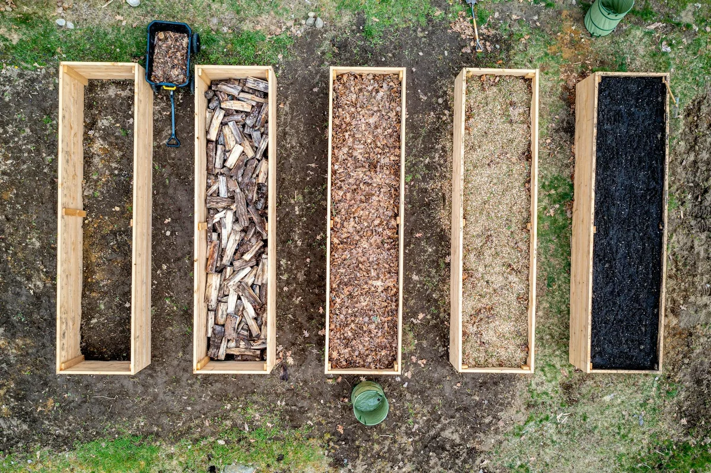

Mulch keeps moisture in, breaks down into the soil, and costs less upfront — rock holds its shape indefinitely, drains fast, and needs no annual topping. For Winnipeg homeowners, the right answer depends on your soil type, the specific bed you're filling, and how Manitoba winters treat whatever you put down.
Want help choosing and installing the right option for your yard? Get a free landscaping quote and we'll tell you exactly what works for your property.
What's the Difference? Mulch vs Rock in Plain Terms
Both mulch and rock serve the same primary function: they cover bare soil in garden beds to suppress weeds, regulate moisture, and finish the look of your yard. That's where the similarities end.
Mulch — typically shredded wood, bark chips, or cedar — is organic material that decomposes over time. As it breaks down, it adds organic matter and nutrients to the soil below. Mulch is softer, easier to work into tight spots around plants, and blends naturally into planted beds. The trade-off: it needs to be topped up every one to two years as it thins out.
Rock and gravel — river rock, crushed limestone, lava rock, or pea gravel — are inorganic and essentially permanent. Once installed, they don't decompose, don't need replacing, and handle heavy rain or foot traffic without washing away. The trade-off: rock doesn't feed the soil, can overheat in full summer sun, and costs more upfront per square foot.
What Winnipeg's Climate Does to Each Option
This is where the choice gets specific to Winnipeg. Our prairie climate is harder on garden beds than most Canadian cities — not because of the cold itself, but because of the freeze-thaw cycles that stretch from October through April.
With mulch, repeated freezing and thawing accelerates breakdown. What would last two full seasons in Vancouver might need topping after one Manitoba winter in Winnipeg. On the positive side, a 3-inch mulch layer insulates plant roots through the worst of the cold, reducing frost heave and protecting perennials that would otherwise struggle in zone 3 conditions.
Rock behaves differently — it absorbs and releases heat rapidly, which can cause the ground beneath it to heave and shift more noticeably through our freeze-thaw cycles. Without a properly installed weed barrier underneath, roots and clay soil will push up through the gaps within a couple of seasons, creating a mess that's tedious to fix.
Winnipeg's clay-heavy soil also drains slowly. Mulch actually helps here by gradually improving soil structure as it decomposes. Rock sits on top and doesn't improve drainage at all — which in a poorly graded yard can mean water pooling along foundation walls or in low spots all spring.
We can price out both options for your Winnipeg property in minutes. Request a quote and we'll walk you through what makes sense for your beds.
Cost Comparison: Mulch vs Rock in Winnipeg (2026)
Here's what you can expect to pay for each, based on typical Winnipeg residential garden beds:
Mulch Costs
- Material: $40–$80 per cubic yard delivered
- A standard 200 sq ft bed at 3 inches deep needs roughly 2 cubic yards — $80–$160 in material
- Installation (spreading): typically $50–$80 per bed for a pro crew
- Annual refresh: budget $60–$100 per bed every 1–2 years as it breaks down
Rock and Gravel Costs
- Material: $60–$120 per cubic yard (river rock runs pricier than crushed limestone or pea gravel)
- Same 200 sq ft bed at 2 inches deep needs 2–3 cubic yards — $120–$360 in material
- Weed barrier underlayment: $0.10–$0.20 per sq ft, strongly recommended in Winnipeg's clay soil
- Long-term cost: essentially zero after year one — no annual refresh required
Over a five-year window, rock often comes out cheaper per bed for low-maintenance situations. Mulch wins on total yard health and soil improvement, especially in newer Winnipeg gardens where the soil hasn't had time to build up organic matter.
When Mulch Is the Better Call
Mulch is the stronger choice when:
- You have planted beds with perennials, shrubs, or trees that benefit from improved soil and root insulation
- You're working with Winnipeg's heavy clay and want to gradually improve drainage over several seasons
- Your beds are in shaded or partially shaded areas where rock's heat-absorption is less of an advantage
- You're on a tighter upfront budget and willing to refresh annually
- You want a softer, more natural look that blends with most Winnipeg landscape styles
For front yard beds, foundation plantings, and any area where you're actively growing plants, mulch almost always outperforms rock on long-term plant health.
When Rock or Gravel Makes More Sense
Rock earns its place when:
- You want a truly low-maintenance solution for an area you don't want to touch for years
- The bed has no active plantings — decorative borders, strips along fences, around AC units or utility areas
- Water drains freely and you're not fighting a clay drainage problem
- You want a cleaner, contemporary aesthetic, particularly around newer Winnipeg builds or modern landscaping designs
- You're covering a slope where organic material would wash downhill after heavy spring rain
Rock is also ideal for the narrow side yards or utility strips that are awkward to maintain. Our landscaping services in Winnipeg include both mulch and rock installs — we match the material to the purpose, not just the aesthetic.
Most Winnipeg yards actually need both — mulch in planted beds, rock in utility or decorative strips. Getting a quote costs nothing and helps you plan before the season fills up.
Making the Right Call for Your Winnipeg Yard
There's no universally correct answer — but there is a correct answer for your specific beds, your soil, and your maintenance tolerance. The biggest mistake Winnipeg homeowners make is choosing rock purely for aesthetics and then discovering it's worsening a drainage problem, or choosing mulch for a utility strip that gets no plant benefit and just needs topping every year.
The better approach: go bed by bed. Planted perennial borders → mulch. Decorative strip or utility run → rock. Foundation plantings → mulch to insulate roots through our long winters. An exposed steep slope → larger river stone to prevent washout after snowmelt.
Our crews handle full-yard maintenance for Winnipeg homeowners all season long, and we see firsthand which choice holds up after a Manitoba winter and which creates new problems by June. If you're unsure, we'll give you a straight answer when we quote your yard — no upsell, no runaround.
Get a Clear Price for Your Winnipeg Yard
We service all of Winnipeg and surrounding areas. Quotes are fast, free, and specific to your yard — not a generic estimate off a website.
Get a Free Quote